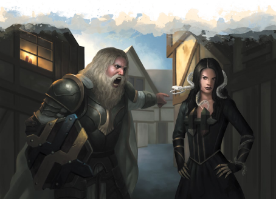
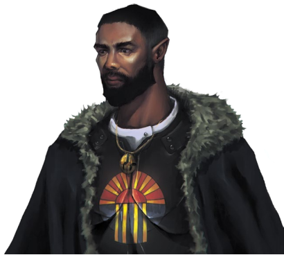
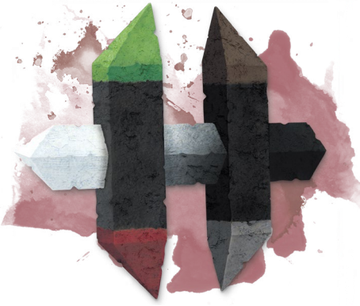

天命诸神与黑暗六神无时无刻都在影响并改造着我们的世界。昂纳塔会在铁匠铺里的铁匠身边指引他的双手。杜・顿恩与每个在战场的士兵同在。感恩阿拉瓦伊的温润细雨让庄家成长，诅咒吞噬带来的暴风雨摧毁你的田地。黑暗六神也在我们身边，�k们试图诱使我们偏离正道，让我们遵从于残忍和贪婪，我们必须谨记天命诸神的教诲还有感恩他们的赐福。
天命诸神并不是一个严苛的宗教，而且在科瓦雷大陆有许多文化上有着独特差异的分支。作为这种信仰的追随者，你可能会觉得与某个神�o有特别强烈的联系，或者你可能会对诸神带着平等的虔诚。你坚信有某个特定的神�o在指引你行动吗？在你的一生中，是否有某个关键时刻让你感觉到了某个天命神�o或是黑暗六神的干预？

天命诸神的信徒通常被称为封臣，尽管有着这样的统称，但他们并非完全一致的。在艾伯伦世界的许多不同文化中都可以找到天命诸神信仰的变体――像是人类信仰的派里尼信条（the Pyrinean Creed），希恩德瑞克巨人们的鲁西尼信仰（the Rushemé faith），卓姆的卡扎克传承（the Cazhaak traditions）。总的来说，神�o的名字和分派是多种多样的，但信仰的基石是不变的。
诸神不曾行于世间。从没有什么人见到过杜・顿恩下凡。事实上，这没有意义。当你知道杜・顿恩在你每次举起你的武器时都将与你同在并且指引你的双手，你便不会渴望见到杜・顿恩。奥林注视着学习魔法的法师和主持法庭的法官。每一场风暴里都有吞噬的身影，但你无法与它战斗，就像你无法用剑战胜地震一样。一个虔诚的封臣不需要诸神存在的实据，因为这个世界本身就是证据。
于是，有许多神话涉及到诸神们下凡时的英雄壮举时都特意地强调“创造”这一要素。这些神话多半设定为发生于恶魔时代，封臣学说认为：诸神打败并封印了邪魔魔君，而后诸神从�k们那夺过了对世界的统治。所以有关于杜・顿恩的很多都是关于�k巨力无穷的故事，又或者你会找到某个据说是昂纳塔的锤子的工艺品，这些线索可以追溯神话的时代，那时的�k们是勇者而非真神。
每种文化都会用他们独特的方式描绘诸神们。巨人把他们描绘成巨人，而派里尼教派（the Pyrinean Creed，后面的章节中会进行说明）把他们描绘成人类。许多文化使用龙的形象来代表诸神。但是，由于诸神们没有一个准确的形象，任何对�k们的表述都纯粹是象征性的。杜・顿恩是勇士，昂纳塔是工匠――任何能够清晰描绘这些概念的形象都可以。
诸神随时随地都会为任何愿意倾听的人提供指引。由于这个信仰是个人性的，它没有像银焰一般的组织性和等级制度。大城市通常都会有一个有全职祭司们运营的天命诸神八方圣殿。在较小的村庄和城镇，可能会有一个无人的神龛，或者在当地会有某个有神通之人专门负责各类祭典。在河滩镇（Riverford），据说当地的客栈老板达拉能和博德雷沟通：她是社区的支柱，人们常来找她解决问题和争端。
祭司并不是与神沟通的唯一媒介：任何人都可以向诸神祷告。祭司们负责提供指导和解析，帮助你理解你的命途。神殿和祭司也常履行他们宗教职责之外的其他职能：萨恩的奥林大厅既是一个图书馆也是一个神殿，你也可能会在市场的中心找到寇・柯兰的神龛。祭司们扮演着教师、调解人和指引者的角色，但他们也常常是与他们所侍奉的神�o相关神职方面的问题专家。
在创造一个封臣角色时，要考虑你与诸神的个人关系。你觉得和哪一位关系密切？你觉得你是被赐福的还是被神明直接指引的？在你的一生中，你是否相信某一位神�o曾对你进行过干涉？
你应该遵守法律（奥林）和重视你的社区的传统（博德雷）。工业（昂纳塔）和商业（寇・柯兰）值得鼓励，但贪婪（监守）则不为提倡。在战场上，你应该勇敢地战斗（杜・顿恩）和荣誉（杜・哈拉），而不要带着过度的残忍（嘲弄。你应该相信奥林的律法，不要私自报仇（愤恨）。
天命诸神所代表的普世价值在五国无处不在。当你走进法庭，奥林将注视着你。传统的婚礼则会召唤博德雷。许多人并不是虔诚的封臣，也不相信诸神在注视着他们行为。但即便是这样的实用主义者，也能记住每一位神�o的名字，知道许多歌颂他们的歌谣，并会庆祝“狂欢夜”或“博德雷盛宴节”。总的来说，如果你在五国生活，你会被默认是封臣，除非你明确地表示你不是。
早在人类皈依律法与知识之神奥林之前，希恩德瑞克的巨人们就为律法使者欧拉隆修建了神殿。在安黛尔的猎人供奉巴力诺，但在阴影湿地的半兽人向兽王巴尔坎祈祷，而塔兰塔平原的半身人中则流传着聪明的巴利・努的故事。
某些情况时文化间自然融合的结果。湿地的兽人将他们的原始信仰与人类殖民者的传承融合在一起，可塔兰塔平原的居民在遇到人类之前就已经在讲述着他们的故事。尽管学者们对其中的原因争论不休，但大多数人都同意，当一个传统越接近某个具体的神�o，就越容易从这种信仰中获得神力。如果都是崇拜“巴力诺”这位神明，那么崇拜司职狩猎的神�o的传统会比崇拜某条超级三文鱼的传统会产生更多的牧师或者圣武士，因为前者会更容易与神力之源产生联系。封臣贤者们断言，这证明了天命诸神的存在，而质疑者则认为这可能只是一个数字游戏――天命诸神信徒那么多，牧师和圣武士出的多那还不是废话？
由于这种多样性，封臣的神职者们很少关心异端的问题。那些信奉派里尼教派的人可能会试图纠正他们认为有缺陷的教义。但总的来说，大多数人认为自己知道诸神的真名而对湿地兽人的无知报以微笑。同样的，当PC或NPC选择皈依下面所列举的教派时，你总是可以在其传统上设计一些独特的变体，或者引入一个新的崇拜某个神�o的教团。这种开放性也反映在封臣信徒与银焰教会的互动中。派里尼教派断言，天命诸神在世界之初便击溃了魔君们：如果说银焰是封印魔君的锁链，那么想必是天命诸神创造了它。所以没有什么本质的冲突，相反，封臣信徒只会耸耸肩并说：“你干嘛老是拜一个笼子？”
对诸神的崇拜有许多不同的方式和形式。某个社会可以只信奉诸神中的一位，又或者他们会将天命诸神和黑暗六神中的某几位组成一个整体来崇拜。下面将列举出几种最广为流传的例子。
《艾伯伦：从终末战争中崛起》中关于天命诸神和黑暗六神在五国传统的命名――奥林，巴力诺，阴影――就是来自于这个教派的。八角圣徽、九和六的分类以及圣日，如博德雷盛宴日都是如此。如果你归属于派里尼教派，那你就是信奉艾伯伦官方官方资料里的天命诸神信仰。你知道整个神系里的所有神�o，即便只是其中的某一位跟你关系比较大。
虽然普通信徒都听说过“派里尼信条”这个词，但它的来源基本上只有学者和神职人员才感兴趣。一个典型的封臣信徒可能知道他们信奉派里尼信条，但如果你随便从他们里抽五个问他们什么是派里尼，你会得到五个不同的答案――“他是一个传奇的传教士封臣””“那是达斯卡拉里的某个有着议会的镇子封臣”事实上，这些信条是数千年前在索隆娜大陆的一个叫派里尼的国家所编纂的，然后由人类殖民者带到科瓦雷大陆。虽然派里尼在一千多年前被瑞依卓尔帝国吞并，它的人民不再崇拜天命诸神，但他们的文化遗产仍在科瓦雷流传。
《艾伯伦：从终末战争中崛起》，中给每个神�o都划分了领域，但派里尼教派的祭司通常可以主持任何一位神�o的祭典，向最合乎情势的神�o祈祷。在创建一个天命诸神牧师时，你可以设定你与某个特定的神�o有紧密的联系并且主要为�k代言：在这种情况下，选用与这位神�o相关的领域。例如，生命领域是一个很好的选择，因为它提供了很泛用的职业特性来保护你的盟友和信众；知识领域则对一个学者型的牧师来说会更实用。
晋升巨龙教会以和派里尼教派一样的形式和名称崇拜诸神。然而，教会宣称与魔君们战斗的是巨龙，而诸神实际上也是巨龙。教会非常看重财富和经济实力：信众们常被要求向他们所在的神殿捐款。而祭司们也经常做一些局外人看来会被会认为是腐败的行径。他们有种异端信仰：凡人也可以通过效仿某位神而最终取代他们的位置。坊间有传言指向：柯杜瑞斯・埃莱尔・ir・柯兰，柯兰堡图书馆的创建者，建造图书馆是为了继承奥林的神位。虽然教义认为是升神是死后的事，但是一些牧师教导献身的成员――特别是那些向神殿宝库捐献的狗大户们――实际上是可以在活着的时候变成龙的。虽然这似乎不太可能，但这可能是一个有趣的背景，一个龙脉术士：这并不是说你祖上是龙，而是因为你的虔诚，你似乎进化成了一条龙。
升龙教的追随者们相信：龙是诸神的使者和神器，尽管很少有龙以任何方式承认这个教派的说辞。信徒认为龙本身遵循一种被称为“三”的信仰形式――龙族的“三”――但是阿贡尼森的传承很少被科瓦雷人所知道。
升龙教在安黛尔和吉拉哥的势力最大，虽然它仍是一个鲜为人知的教派，并且在风暴里、柯兰堡和费尔海文都有公开的神殿。
宁静守夜人的牧师专门从事尸体防腐、葬礼和墓地维护。在五国的每一个主要城市都可以找到他们，甚至更小的城镇也会有宁静守夜人祭司在照看墓地。宁静守夜人坚持认为死者的灵魂通过杜鲁尔进入天命诸神的神国――除非他们被监守（the Keeper）那贪婪的魔爪掠走。牧师最重要的职责之一就是帮助死者选择合适的陪葬品或是能引开监守注意的祭品，以确保死者的灵魂到达杜鲁尔。对一个没什么成就的普通人来说，一枚硬币就足够了。但死者越是功勋卓著，监守对他们的灵魂就越感兴趣――这就需要更多的祭品来引开他的注意。
守夜人很少与外人讨论他们信仰的其他方面――即一个灵魂一旦去往诸神的神国，就再也回不来了。宁静守夜人相信如果奥林知道未来需要一个死去的英雄，他会让守夜人在灵魂到达杜鲁尔之前留住他，这样当时机来临他就可以被复活。因此，虽然宁静守夜人主要供奉奥林，但他们理解并尊重监守，并且相信�k所做一切是为了更伟大的事情。
守夜人成员经常充当灵媒和驱魔者，他们认为让徘徊的灵魂安息是神圣的职责。与宁静守夜人牧师通常会选择坟墓领域（扩展《XGE》），当然选择知识和死亡领域也可以。守夜人圣武士通常会选择奉献或者救赎之誓，但那些偏向监守的可能会是一个破誓者。
对于PC来说，宁静守夜人中的两派可能是有趣的选择。宁静守夜人相信奥林是在保存英雄的灵魂，为即将到来的末日之战做准备。据说这将涉及到银焰的崩溃和随之而来的魔君解困。你可能被派到世界上去探查这场冲突即将发生的迹象；这可能需要你去调查哀伤之地或是与砂主对抗。
对于PC来说，宁静守夜人中的两派可能是有趣的选择。宁静守夜人相信奥林是在保存英雄的灵魂，为即将到来的末日之战做准备。据说这将涉及到银焰的崩溃和随之而来的魔禁解困。你可能被派到世界上去探查这场冲突即将发生的迹象；这可能需要你去调查哀伤故地或是与砂主对抗。
宁静守夜人偶尔也会辨认出那些他们认为被奥林标记为英雄的人，将他们的灵魂将被保存下来。这个人可能是你的冒险伙伴之一――作为教派一名侍僧或贤者，你被指派去跟随这个人，记录他们的生活，确保在他们去世时举行适当的仪式。“别太在意我，我会一直跟着你，直到你英勇地死去。”“相信我，你一定会成就一番大事业的！”

派里尼教派的追随者歌颂天命诸神，忌讳黑暗六神。六神代表了在普世价值观里负面的黑暗力量。然而，数个世纪以来，一直有异端对这一观点提出质疑。三面崇拜有两个主旨。一方面，他们将诸神和六神重新分组并崇拜，声称六神倡导的价值观里也有一些可取之处值得去崇拜。除此之外，教派还是一种秘密结社――一种将人们团结到一起的兄弟会组织，即便它的成员并不一定参与教派的行动。举个例子，五国的军队中基本都有信奉战争三面的组织。
币之三面分别是寇・柯兰、昂纳塔和寇・图兰特(监守)。这个教派在大城市活动，通常招募商人、走私者和工匠寡头。它基于这样一种理念：虽然诚信交易和工业是商业的核心，但人们总有办法得到他们想要的东西：因此，这是一个罪犯和行会工匠可以合作的中立场所。金权会通常从币之三面的信徒里招募成员。
爱之三面象征着博德雷、阿拉瓦伊和索尔瓦伊(愤恨)――羁绊的爱、迎生的爱和燃烧的爱。这种崇拜接纳了所有相信爱并运用爱的力量的人，从演员到诗人乃至拜金朋友。成员们聚在一起分享故事，改变生活：他们擅长撮合和破坏他们认为注定要失败的重要关系。
战争三面是杜・哈拉、杜・顿恩和杜・阿祖尔(嘲弄)。它曾是伽利法联军的一部分，在五国的所有军队中都可以找到这个教派。教派为士兵和退伍军人提供一个不分等级和国籍的平等交流场所。教派声称，荣誉和勇气是值得重视的，但狡猾和残忍也是有必要的，即使从来没有人想要它们。
荒野三面以阿拉瓦伊、巴力诺和萨尔贡(吞噬)为荣。教派通常出现在农村，信众包括农民、猎人和各种各样的流浪者。荒野三面支持农业和狩猎，但认识到野性不能完全被驯服。成员们有时会进行祭祀、’焚烧田地或是从事其他破坏行为。他们相信吞噬一定有他的职责――通过提供为他献上贡品，他们阻止吞食袭击其他地方。
|
63页边栏： 天界生物与天命诸神 当天命诸神的牧师施放诸如通神术或异界誓盟时，他们通常会与来自外位面的天界生物互动。通常，会找上一个体现了与对应神�o概念对应的天界生物：当一个封臣牧师以杜・哈拉之名施展天界咒唤术Conjure Celestial时，可能会招来一个来自撒法拉斯的战争天使。当天界生物提及某位天命神�o的名字时，听众会听到他们最熟悉的名字，不管是巴力诺、巴尔坎还是巴利努。因此，一些学者问道：被召唤的天使是服务于“杜・哈拉”，还是服务于被翻译成“杜・哈拉”的“战争中的荣誉”。如果被问到这样一个学究气十足的问题，天使和虔诚的封臣都会简单地回答：“有什么区别吗？杜・哈拉是战争中的荣誉。” |

天命诸神代表了文明的支柱：农业、商业、工业、荣誉、法律，黑暗六神则代表着可怕的毁灭性力量。他们的存在解释了为什么会有在这个世界上发生。当一场大火摧毁一个村庄时，吞噬是罪魁祸首。当某人因冲动而犯罪时，他们会被愤恨所压倒。当怪物捕食无辜的人时，善良的人们会诅咒阴影。派里尼教派告诫人们应该远离黑暗六神，并教会人们他们的名字和神职，以便人们能够识别他们的作为并理解如何对抗他们。当派里尼教派的信徒向黑暗六神献上贡品时，通常都是出于绝望：乞求吞噬平息风暴和巨浪，或者在法律失效时，呼唤愤恨以实施可怕的报复。然而，在五国中，有一些人为了自身的权利而崇拜黑暗六神。本节简要介绍了黑暗六神，以及在五国会如何碰到他们的追随者。这些描述是对： 《艾伯伦：从终末战争中崛起》，的进一步补充。卓姆的怪物们对天命诸神和黑暗六神也有截然不同的看法，这在第四章中有会更详细的探讨。
吞噬The Devourer
神职：自然之怒
建议牧师领域：自然、风暴
建议圣武士誓言：古贤
吞噬是海啸，是野火，是地震。�k是自然界的狂野之力，它可以打破任何枷锁，摧毁最坚固的城墙。吞噬是掠食者们光荣的残忍，是鹰啸和狼嚎。他是一切狂野、野蛮与未知。�k是最深的海洋，是一种可以跨越却无法控制的力量。
那些害怕吞噬的人把它看作是一种纯粹的毁灭性力量。阿拉瓦伊是农业的守护神，和平地收获大自然的恩赐。巴林诺是狩猎的守护神，是使用弓、矛和技能挑战或驯服强大野兽的文明人们的守护神。这些神灵反映了文明对自然世界的驾驭和控制的力量，但吞噬揭穿了这一谎言，�k的存在表明自然永远不会被真正驯服。
那些拥抱吞噬的人赞美荒野的伟大力量。它们陶醉在狂暴的风暴中，高兴地拥抱自己的掠夺本能。他们认为自然往往是血腥和残酷的，并毫不犹豫地以它为榜样。虽然它可能是残酷的，但大自然很少是邪恶的。吞噬的牧师经常敦促他们的信众们跟随本能，或者教导人们与自然和谐相处，而不是强迫他们的意志。他们可以充当中间人，说服吞噬转移他的愤怒并宽恕他们的追随者――或者将他的愤怒转向他们的敌人。
愤恨The Fury
神职：激情、复仇
建议牧师领域：战争
建议圣武士誓言：复仇
愤恨是会让你猜疑或绝望的无声低语。她是不计后果的愤怒和无束的激情。本能是愤恨在理性思考失败时引导我们的声音。她是允诺向那些愿意投降的人复仇的复仇之神。她的父亲，吞噬，体现了自然风暴的毁灭性力量；愤恨是我们内心的风暴，是我们努力控制的狂野情绪。
愤恨的信徒通常有两种选择。狂欢者认为压抑情绪会导致痛苦，人们应该充分拥抱自己的情绪，按冲动和本能行事。他们举行疯狂、狂喜的庆祝活动，让参与者暂时摆脱文明的枷锁，充分体验生活和情感。踏上这条道路的PC可能是狂战士道途的野蛮人或使用迷惑学院的吟游诗人(扩展《XGE》)――要么拥抱自己的原始情感，要么激发他人的原始情感。术士可能会把他们的力量归因于狂野情绪：他们只有在愤恨的指引下才能使用魔法。
愤恨的另一条路是复仇之路。遭受过痛苦的人可以号召愤恨给予他们意志和力量供他们复仇。或者与其寻求报复，有一种传说让被冤枉的人在窗户上放一支红蜡烛，上面刻上折磨他们的人的名字。这是在祈求愤恨为他们报仇。走这条路的PC可以被指引去调查并完成这复仇的召唤。虽然这可能是牧师或圣骑士的道路，但它同样很适合刺客游荡者、低语学院的吟游诗人或是邪术师。
监守The Keeper
神职：死亡、贪婪、囤积
建议牧师领域：战争
建议圣武士誓言：复仇
每个封臣信徒都知道，他们不应该炫耀自己的幸运，避免变得傲慢。那些大声嚷嚷的人可能会引起监守嫉妒的目光。即使是最强大的英雄也会因疾病或厄运而倒下，因为监守有的是手段去击倒他想要的人。一旦他把你拉入黑暗，他就会在你的灵魂到达杜鲁尔之前就抢走你的灵魂，并把你放到他的数不清的收藏品中，在那里他可以玩弄你，折磨你，直到时间的尽头。
监守是那些将利己主义者的守护神。他引导那些用不顾他人得失赚钱的人。一个供奉欧拉卓的游荡者看上去会像是一个义贼；而供奉监守的人不会因为自己的恶行感到愧疚。除了引导那些把私利放在首位的人，监守还以他喜欢做交易而闻名――尽管从不做亏本买卖。被称为“监守之爪”的祭司代表监守执行这些交易。尽管这些行为通常是抽象且纯粹由行为所致。一个艺人可以与监守之爪讨价还价，用十年的生命换取名誉：即使艺人后来出名了，也无法知道这是否是交易的结果，也无法预料艺人什么时候会突然死亡。这很容易成为PC的背景故事的一部分。你的艺人角色和监守做了交易吗？
PC或危险的NPC的另一种可能的路径是成为“监守之牙”。这些人会看到监守想要添加到他的收藏品中的东西：这些通常是特定的人的灵魂，但它们也可能是工艺品或其他独特的珍宝。这是一个有趣的路径，对于刺客游荡者，破誓者，或咒剑邪术师(扩展XGE)。
嘲弄The Mockery
神职：背叛、杀戮
建议牧师领域：诡术、战争
建议圣武士誓言：征服、复仇
杜・哈拉会教你如何光荣地战斗，杜・顿恩给予你勇气，当你死的时候，至少你会知道你是在勇敢而光荣地战斗。嘲弄会把你拖进泥泞和鲜血中，驱使你背叛自己的原则，并使用让你的盟友和敌人都感到恐惧的战术――但战斗结束的时候，你将会是那个站在的人。你会走哪条路？
那些鄙视黑暗六神的人谴责嘲弄是一个恶棍，一个鼓励残忍和背信弃义行为的怪物。这可能单纯是用隐形术去偷袭敌人而不是堂堂正正地上。又或者它可能意味着屠杀无辜的人，折磨你的敌人，撕毁停战协议――任何能带给你胜利的事情。那些信奉嘲弄之道的人可能会说，这种战术是打倒比你强的对手的唯一方法。荣誉是强者的奢侈品：对于那些弱小且受压迫的人来说，胜利才是最重要的。
其他追随嘲弄的人认为，战争中荣誉的概念本身就是一种妄想。痛苦、恐怖和死亡是暴力的必然结果；至少追随嘲笑的人承认了别人否认的事实。毫无征兆地杀人的刺客，视仁慈为弱点的野蛮人，树立可怕名声的海盗――所有这些都可能视嘲弄为盟友。虽然这对于PC来说是一条黑暗的道路，但是英雄可以使用嘲笑的伎俩来追求崇高的事业。一个冷酷的执法者可能会在嘲弄的指引下用潜行和恫吓的方式来恐吓胆小的罪犯，使他们改变他们的方式。
阴影The Shadow
神职：野心、诱惑、禁断知识、怪物
建议牧师领域：奥秘（扩展SCAG），知识，诡术
建议圣武士誓言：征服、破誓者
阴影和奥林在我们每个人的心中剧烈地斗争着。奥林的声音告诉我们，团结会使我们更强大，为了共同的利益，受苦是值得的。阴影悄悄地说，没有共同的利益，重要的是你需要什么，你能做什么。为什么你要为别人牺牲，而不是为自己做最好的事情？既然可以索取，为什么还要付出？
阴影是野心的主宰。那些信奉它的人认为这是一种积极的品质：阴影会告诉你如何做到最好。但在追求自己的抱负时，你能走多远？你会牺牲什么――或者谁？信奉阴影的牧师称自己为“导师”，以强调他们可以向你展示如何实现你的全部潜力；其他人则称他们为劝诱者，因为他们总是会把你推向最黑暗的道路。派里尼教派说，阴影吞噬了那些受其诱惑的人的灵魂；“导师”们则会告诉你，这正是天命诸神用来骗你遵守他们的守则的谎言。
阴影还保管着那些你不该去追寻的禁忌知识和秘密。这包括善良的人们应该避免的奥术魔法授予能力(关于这方面的灵感，请参阅禁忌魔法侧栏)。任何施法角色都可以将自己的异能归因于阴影：法师可能一直在努力学习，但在向阴影献祭之后，他们获得了新的视界。阴影也可以作为恶魔和咒剑邪术师的宗主。虽然阴影不会和邪术师直接互动，但他们可以像牧师一样获得幻象：他们可以与自称为阴影代言的恶魔互动，又或者他们可能误解了他们的宗主本质，实际上与苏・卡特什（Sul Khatesh）定下契约。
除了禁忌学识，阴影牧师通常知道一些他们根本不应该知道的事情――如果被揭露会有人遭殃的秘密。阴影的祭司有时会在地下犯罪组织里充当调停者，你愿意为你所追求的知识付出多少？
除此之外，阴影还被视为一种创造怪物的堕落力量，无论是比喻里的还是字面上的诱惑――据说它创造了许多捕食无辜者的怪物。反过来，许多可怕的怪物视阴影为他们的保护神。
旅者The Traveler
神职：变化、混乱
建议牧师领域：锻造(扩展《XGE》)，知识，诡术
建议圣武士誓言：圣骑士很少会旅者的斗士，尽管从规则上来看，所有的誓言都可以用来表示生活的改变。
旅者涉及了许多其他神�o的领域。就像奥林与阴影一样，旅者是知识的源泉。与欧拉卓和嘲弄一样，�k是那些依靠欺骗和狡诈过活的人的守护神。就像昂纳塔和愤恨，它可以为艺术家们提供灵感。畏惧旅者的人和信奉旅者的人都同意一件事：无论旅者送了什么礼物，它都将导致混乱。如果旅者给你知识，那是因为这突来的启示会迫使你重新评估你所认知的世界。如果它帮助你行骗，那是因为你的行为会给你或别人的生活带来混乱和危机。昂纳塔会教铸剑师制作更好的剑；旅者可能会教他们如何制造炸弹，改变战争的面貌。旅者不会来满足你的贪婪或是赋予你野心。相反，它会让你走上你从未想过的道路。这有时会给你带来好运，但当你拜访旅者时，你那是在邀请意想不到的事情进入你的生活。
五国中名声最臭的旅者崇拜之一在卡尼斯家族里。虽然昂纳塔是公认的卡尼斯家族的守护神，但他们里有些人认为旅者是戏剧性灵感的来源，帮助奇械师们取得意想不到的突破。那些呼唤旅者的人知道，它的礼物肯定会有代价，并可能动摇文明的基础，但他们仍然渴望这个伟大的发现。卡尼斯家族的许多人认为，战俑的发明者――爱伦・D・卡尼斯――是一个旅者的崇拜者；另一些人认为哀伤之日可能是卡尼斯继承人因循旅者之道导致的。
一些追随旅行者的人是戏法师，在没有明确计划的情况下制造混乱。但也有人把自己当成指引者，为了给别人上课而捉弄别人。指导者们试图挑战已建立的传统、法律或制度――不一定要摧毁它们，但要确保它们不会过时。还有一些人是流浪者，拥抱着不断变化的生活。第二章中描述的幻身灵旅行者就属于这一类，他们相信只要他们保持不定的状态，旅行者就会引导和保护他们。最终，旅者会让你的生活陷入混乱――因为只有适应这种混乱，人们才能成长。
|
65页边栏： 可选规则：禁忌魔法Optional Rule： Forbidden Magic 阴影引诱你作恶也会教给你那些不该被知晓的魔法。虽然游戏的规则并没有设有不能允许施放的禁忌魔法。但是DM可以选择在让角色的一个或多个额外的法术在每次施放时会带来危险或令人不快的副作用。阴影可以让施法者每长休一次就增加他们所知道的任何法术的力量――就像它是用一个高级法术位施放的一样，但是这样做会触发一个负面效果。不管你设置了什么效果，他们应该阐明一个明确和具体的理由。为什么这个魔法是禁忌的。每次使用这个魔法，都会有人或东西付出代价。下面给出一些参考： l 当你施放此法术时，掷d6。DM选择你或你的一个盟友，对该生物造成黯蚀伤害或是下一次豁免时获得对应值的惩罚。 l 当你施放此法术时，一个无辜生物死亡。你无法控制谁将遭受痛苦，而且可能永远也不知道是谁。 l 当你施放此法术时，植物枯萎，你周围15尺内的所有生物受到1点黯蚀伤害。 l 当你施放此法术时，选择一个视野内的盟友。那个玩家可以向你透露一个关于他们角色的令人不安的秘密。这肯定比他们以前泄露的任何秘密都要糟糕：如果他们做不到，或者他们选择不做，法术就会失效。 l 当你施放这个法术时，这个法术的表述是非常恐怖的。 |